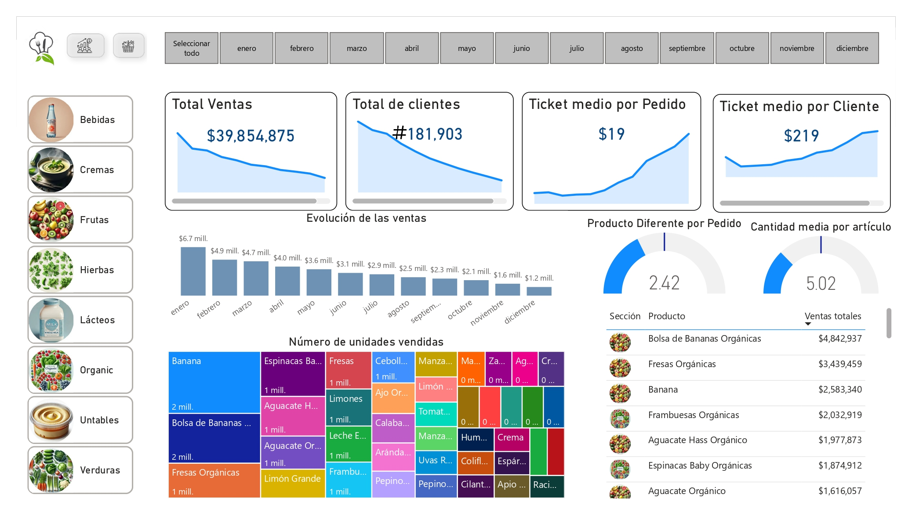

Análisis integral de ventas, productos y comportamiento de clientes
Realizar un análisis completo del desempeño comercial para identificar patrones, tendencias y oportunidades de mejora, mediante:
Consultas SQL diseñadas para responder a 10 preguntas clave del negocio:
Principales hallazgos obtenidos del análisis:
| Métrica | Valor | Interpretación |
|---|---|---|
| Ingreso total | $39,854,875.32 MXN | Volumen de negocio anual |
| Tendencia mensual | De $6.67M a $1.18M | Caída del 82% durante el año |
| Departamento principal | Depto. 4: $37.0M | 92.8% del total |
| Producto más vendido | Banana: 2.46M unidades | Producto estrella |
Dashboard interactivo desarrollado para monitoreo ejecutivo:
Características principales:
Los ingresos muestran una caída del 82% durante el año, de $6.67M en enero a $1.18M en diciembre.
Recomendación: Investigar causas raíz (estacionalidad, competencia, cambios internos) y desarrollar estrategias correctivas.
El Departamento 4 representa el 92.8% de los ingresos totales ($37.0M de $39.85M).
Recomendación: Diversificar fuentes de ingreso mediante desarrollo de otros departamentos y análisis de canasta de compra.
El valor promedio por pedido es de solo $19.34 MXN, con compra media por cliente de $219.09 MXN.
Recomendación: Implementar estrategias de upselling/cross-selling y programas de fidelización.
Documentación completa y archivos fuente disponibles: